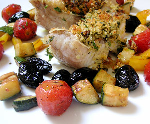

Gratinierter Zackenbarsch
5 von 6die filets in mittelgrosse stücke schneiden und würzen. auf der hautseite 2 minuten braten, herausnehmen und auf eine ofenfeste form geben. die vorbereitete kräutermasse (2 el senf, 2 el olivenöl, beliebige kräuter nach geschmack und 2 toastscheiben zu einer masse verarbeiten) darüber geben und bei oberhitze 5-10 minuten gratinieren.
